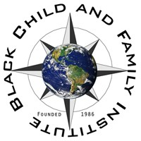

Black Child & Family Institute

Website:
http://www.bcfi.org/home/ Location:
Lansing, MI
BCFI was established in 1986 to provide programs and services aimed at strengthening children and families. Today, we serve children and families of all ethnic groups, as we are located in one of the most diverse communities in the area.
The mission of BCFI reflects the commitment necessary in the Lansing area to address the critical need for a broad range of activities and services essential to raising and meeting the aspirations of many children and families. Our proven record and major focus on academic tutorial, enrichment and enhancement for children and adults, computer technology training, financial literacy, community unity and cultural activities set us apart from other organizations.
BCFI has a long history of providing services to youth and young adults in our community. For more than 23 years we have operated a variety of programs that have offered services in the areas of tutoring and academic achievement; summer employment opportunities; job shadowing; paid/unpaid work experiences; leadership development through community service activity; positive social behavior; and mentoring. We have a full on-site computer lab, a cadre of loyal dedicated volunteers, a strong network of public and private entities, and a deep-rooted commitment to our community which makes us a strong provider of services.
Supported Projects
Volunteer Outreach and Program Development
Amy Radigan
8/2003 — 8/2004
Work Plan
•Assist in the development of a marketing program to promote the new Magic Johnson Lab (MJL) and its programs.
•Assist in providing orientation to interested participants in the new Magic Johnson Lab programs.
•Assist in the distribution of information pertaining to the new MJL programs.
•Assist in contacting local groups and organizations to set-up of informational sessions about MJL programs.
•Assist in the recruitment of volunteer instructors for the MJL programs.
•Assist in responding to telephone inquiries about the MJL program.
•Assist in the publication and distribution of MJL program schedule each quarter.
•Assist in the development of resources that will enable the MJL program to increase its capacity.
The Closing the Digital Gap (CTDG) program was fortunate to train nearly 500 Lansing area residents, approximately 240 in the Michigan Works Internet job search program, 139 in our core computer give-a-way program, 72 in the Computer Literacy program, and 45 in the our Web Page Creation class. Staff and volunteers exceeded their six month training goal from February to August of 2004; nearly every staff received over 25 hours of additional training — our partners Michigan State University and New Horizons Computer Learning Centers were responsible for the majority of training.
Amy Radigan was very instrumental in the marketing, recruitment, scheduling, processing and teaching of All Closing the Digital Gap programs, especially those programs held in the Magic Johnson Lab. Amy did the initial intake of all perspective participants including following-up on messages about programs, creating and disseminating program information, and assisting in the instruction of various CTDG classes.
Amy assisted in expanding one of CTDG’s programs pertaining to bridging the Digital Divide for the developmentally disabled (dd), using her contacts from a previous job to disseminate information to other organizations that work with the developmentally disabled. Through her efforts, CTDG not only trained more dds but offered on the job training to 3 dds and hired another dd.
CTC Program Building
David Quashen
6/2002 — 8/2003
To Provide training and support in helping members of the target population increase their computer knowledge and skills. VISTA workers will assist in the implementation of the Port of Entry/Closing the Gap program by scheduling workshops, recruiting volunteers, acquiring and refurbishing computers. Vista Workers will assist the Project Director in the publication and distribution of the newsletter, maintaining mailing lists for the newsletter, responding to telephone inquiries about the program, and assisting in grant applications. Lastly the VISTA workers will submit grant applications and attempt to fund raise from faith based organizations and individuals to provide financial stability to the organization.
In May of 2003, we opened the new Magic Johnson Computer Lab (MJCL). David assisted in:
- the development of a marketing plan to promote the lab and its new programs;
- the grand opening activities surrounding the Magic Johnson Lab;
- the recruitment of volunteer instructors for the MJCL;
- responding to telephone inquiries about the MJCL program; and
- the development of resources that the MJCL program needs to increase its capacity.
David also assisted in preparing 72 PCs.
CTC assistance
Victoria Jackson
6/2002 — 8/2003
To Provide training and support in helping members of the target population increase their computer knowledge and skills. VISTA workers will assist in the implementation of the Port of Entry/Closing the Gap program by scheduling workshops, recruiting volunteers, acquiring and refurbishing computers. Vista Workers will assist the Project Director in the publication and distribution of the newsletter, maintaining mailing lists for the newsletter, responding to telephone inquiries about the program, and assisting in grant applications. Lastly the VISTA workers will submit grant applications and attempt to fund raise from faith based organizations and individuals to provide financial stability to the organization.
In May of 2003, we opened the new Magic Johnson Computer Lab (MJCL). David and Victoria assisted in:
- the development of a marketing plan to promote the lab and its new programs;
- the grand opening activities surrounding the Magic Johnson Lab;
- the recruitment of volunteer instructors for the MJCL;
- responding to telephone inquiries about the MJCL program; and
- the development of resources that the MJCL program needs to increase its capacity.
Victoria provided support for the HOPE Scholars program. She assisted in working out a schedule to train 1,000 students in a five week period. Victoria is now the new director of our Edgewood Village satellite office. She is responsible for all computer-related programs for the residents of the 144 unit complex including our computer access/literacy training workshops.
Computer and Digital Literacy Program Building
Victoria Jackson
6/2001 — 8/2003
Closing the Digital Gap Program
Objective 1: The Program Director, BCFI staff and volunteers will provide orientation and introduction to the project and the Lansing community
Objective 2: New Horizon Computer Learning Center staff will provide four days of training in Beginning, Intermediate and Advance Windows and Beginning Internet.
Objective 3: Provide training and support in helping members of the target population increase their computer knowledge and skills.
Objective 4: : VISTA workers will assist in the implementation of the Port of Entry/Closing the Gap program
Objective 5: Public and private sector resources will enable the project to continue after the Members leave.
Objective 1: Objective completed at the beginning of the program-February 2001.
Objective 2: All Vistas Have had over 10 days of training.
Objective 3: Victoria has provided support services to all 516 graduates
Objective 4: Victoria has scheduled Workshops for 414 graduates since she started. She has assisted in the recruitment of 24 volunteers. Victoria is part of the new and old equipment teams. These teams are responsible for the dispensing and acquiring of all computers and component parts.Victoria has assisted in the scheduling of 24 volunteers,
Objective 5: We have received funding from foundations for over $90,000. We fell short of our objective to raise $8,000 from faith based organizations and $14,000 in individual donations. We received $7,100 from faith based organizations and $10,000 from individuals. We have received a continuation from the City of Lansing Economic Development Initiative and increased the funding to $40,000.
One of the major problems our program has encountered in the past is the overwhelming popularity our program; we have reduced our waiting list to the point that that a new applicant is able to attend class in 6-8 months. We have a new internet service provider ACD.NET who has generously agreed to provide all of the Closing the Digital Gap’s graduates with free 1 year internet service. We have come along way in a short period of time, but we still have a long way to go.
CTC Outreach and Training
Mary Fisher
6/2001 — 6/2002
The anticipated outcome of the project is that an increased number of Greater Lansing citizens will gain access to computers and be able to utilize technology and information to improve their economic, social and political lives. The Project will result in participants getting better jobs, their children getting better grades in school and the community benefiting from a better informed, more involved citizenry.
The VISTA workers will engage in outreach activities designed to involve members of the target populations in the program. They will teach participants how to use computers, how to upgrade computers and how to access and utilize the internet to improve their lives.
CTC Outreach and Training
Elizabeth Carreon
2/2001 — 2/2002
The anticipated outcome of the project is that an increased number of Greater Lansing citizens will gain access to computers and be able to utilize technology and information to improve their economic, social and political lives. The Project will result in participants getting better jobs, their children getting better grades in school and the community benefiting from a better informed, more involved citizenry.
The VISTA workers will engage in outreach activities designed to involve members of the target populations in the program. They will teach participants how to use computers, how to upgrade computers and how to access and utilize the internet to improve their lives.
Related Content
None created yet!